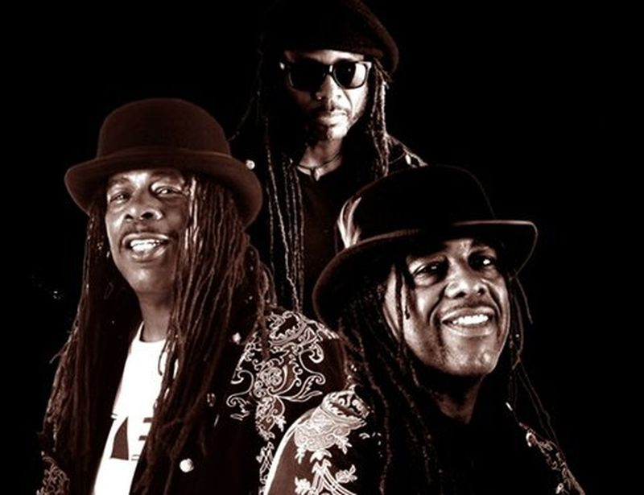
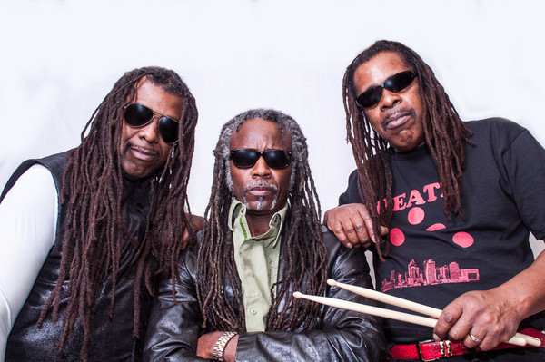

Forgotten except by the most fervent punk rock record collectors the band’s self-released 1976 single recently traded hands for the equivalent of $800 Death would likely have remained lost in obscurity if not for the discovery last year of a 1974 demo tape in Bobby Sr.’s attic. Released last month by Drag City Records as “... For the Whole World to See,” Death’s newly unearthed recordings reveal a remarkable missing link between the high-energy hard rock of Detroit bands like the Stooges and MC5 from the late 1960s and early ’70s and the high-velocity assault of punk from its breakthrough years of 1976 and ’77. Death’s songs “Politicians in My Eyes,” “Keep On Knocking” and “Freakin Out” are scorching blasts of feral ur-punk, making the brothers unwitting artistic kin to their punk-pioneer contemporaries the Ramones, in New York; Rocket From the Tombs, in Cleveland; and the Saints, in Brisbane, Australia. They also preceded Bad Brains, the most celebrated African-American punk band, by almost five years.
The teenage Hackney brothers started playing R&B in their parents’ garage in the early ’70s but switched to hard rock in 1973, after seeing an Alice Cooper show. Dannis played drums, Bobby played bass and sang, and David wrote the songs and contributed propulsive guitar work, derived from studying Pete Townshend’s power-chord wrist technique. Their musicianship tightened when their mother allowed them to replace their bedroom furniture with mikes and amps as long as they practiced for three hours every afternoon. “From 3 to 6,” said Dannis, 54, “we just blew up the neighborhood.”
Death began playing at cabarets and garage parties on Detroit’s predominantly African-American east side, but were met with reactions ranging from confusion to derision. “We were ridiculed because at the time everybody in our community was listening to the Philadelphia sound, Earth, Wind & Fire, the Isley Brothers,” Bobby said. “People thought we were doing some weird stuff. We were pretty aggressive about playing rock ’n’ roll because there were so many voices around us trying to get us to abandon it.”

defiance has become central to Death’s underground legend: what could be more punk rock than telling the suits to take a hike in the name of artistic integrity, even if punk didn’t quite exist yet?
blood brothers from Detroit... The band featured Bobby Hackney, Sr. on vocals and bass, Dannis Hackney on drums and the eldest brother, David Hackney as guitarist, songwriter, and its conceptual leader.
The band that were punk “before punk was punk,” Detroit trio Death comprised of the Hackney brothers: Bobby, David and Dannis. Inspired by the local sounds of Motown, MC5, The Stooges and Alice Cooper, and British groups like The Beatles, The Stones and The Who, their choice of name played on the concept of “spinning death from the negative to the positive.” In 1975, after interest from Detroit music mogul Don Davis and his label Groovesville Productions, and with funding from Columbia Records, Death recorded a set of seven songs. Columbia’s president Clive Davis begged them to change their nihilistic title. On brother David’s insistence, the brothers refused, leading to Columbia withdrawing their support.
How did you form the band? Can you take us back to the beginning? BOBBY HACKNEY: We started in 1971. We were originally called RockFire Funk Express. Right around the end of 1972 into 1973, we begin to explore and immerse ourselves in rock & roll, more or less thanks to the inspiration of a show that Dannis saw with Alice Cooper. That was actually the beginning of it. We immersed ourselves in rock & roll. We needed a new name. David, our brother, came up with the name Death in 1974.
If you were living in Detroit anywhere from the early ’50s right on up to and through the late ’70s, you witnessed a lot of magic being made. Of course, the advent of Motown. Great Detroit rock like Bob Seger, the MC5, Iggy and the Stooges, Grand Funk Railroad. Alice Cooper, who moved to Detroit.
We’ve been saying all along that London and Detroit have a shared sister city kinship because during the early ’60s when The Beatles came and all of the music industry in America was running scared, Berry Gordy invited them to West Grand Boulevard on Hitsville. They recorded “Please, Mr. Postman” and some other Motown songs. After that, the two names became synonymous amongst music fans in Detroit. Motown and Beatles. Just rolled off the tongue together. The Who came to Detroit, set up residency in Detroit, played the Grande Ballroom. The Rolling Stones were in and out of Detroit recording.
I think it’s just two industrial places, you know? Detroit, there was always the churning of the automobile plants. I think that here, in the UK and in parts of Europe where all these great bands come from, there’s a lot of industrial connections. I think there’s the churning of all that machinery that gives us that rhythm and that backbeat that we all tune into. We’ve heard groups like U2 talk about how they were influenced by the industrial surroundings that they grew up in. I think that’s really what it is. Whenever you see a place where there’s a lot of industry and working class people, those are the places where great music comes from.
DANNIS HACKNEY: We were kind of searching for an identity. In Detroit, you can’t stay a funk band too long before you learn about George Clinton and Funkadelic and the Parliament. They were the kings of the funk in Detroit. There was just no way around that. We began to explore heavy rock & roll. I happened into a concert one night that was going on at what was then Cobo Arena, which is Joe Louis Arena now. It was Alice Cooper. That was my first time ever seeing a real rock concert. When I saw those guys, the way they performed on stage, it just grabbed me. I stood there just watching them. I couldn’t wait to get home and tell my brothers that, “Dudes, if we want a new music to play, we got to get on this rock & roll thing.”They kind of rejected the idea at first. Then, two months later, The Who came to town on their Quadrophenia tour. David, who was the leader of the band, got a chance to see that. That’s when he agreed with me that we should go deeper into rock & roll. This seems to be the music that we were made for.

Can you explain what led to renaming the band Death? What was the significance of the new name? BOBBY HACKNEY:David looked at it as a real spiritual thing. We didn’t want people to see it as a dark, gory thing. He was very convinced that Jim Morrison had the same idea in mind in naming the band The Doors and a song “Break on through to the Other Side.” How death should be viewed as not a negative, but a positive because it’s this journey that we’re all going through. He used to call this world a waiting room. Once we make that journey, that’s where [you find] the real party, the real life, the real fun, the real music, the real rock & roll, the real joy. That’s where it all is.
When we made this music in 1974 and 1975, if you called someone a punk, that was a negative term. You either got a black eye or a bloody nose. We didn’t know anything about punk music, man. We just called it hard-driving Detroit rock & roll. That’s what we were playing. Maybe we were a little faster, a little more aggressive, because everybody was telling us that we should be playing some other kind of music like soul music or funk music. We wanted to play rock & roll.
After the death of their father, in Spring of 1974 David came up with the name that changed it all: Death. Their name would always have shock value, because “death is real,” David claimed. The goal was to put a positive spin on death, the ultimate trip. The circles on the band’s logo, the Death triangle, represent the three elements of life: the spiritual, the mental, the physical. The latter circle is the guiding spirit of the universe. It’s God, really.